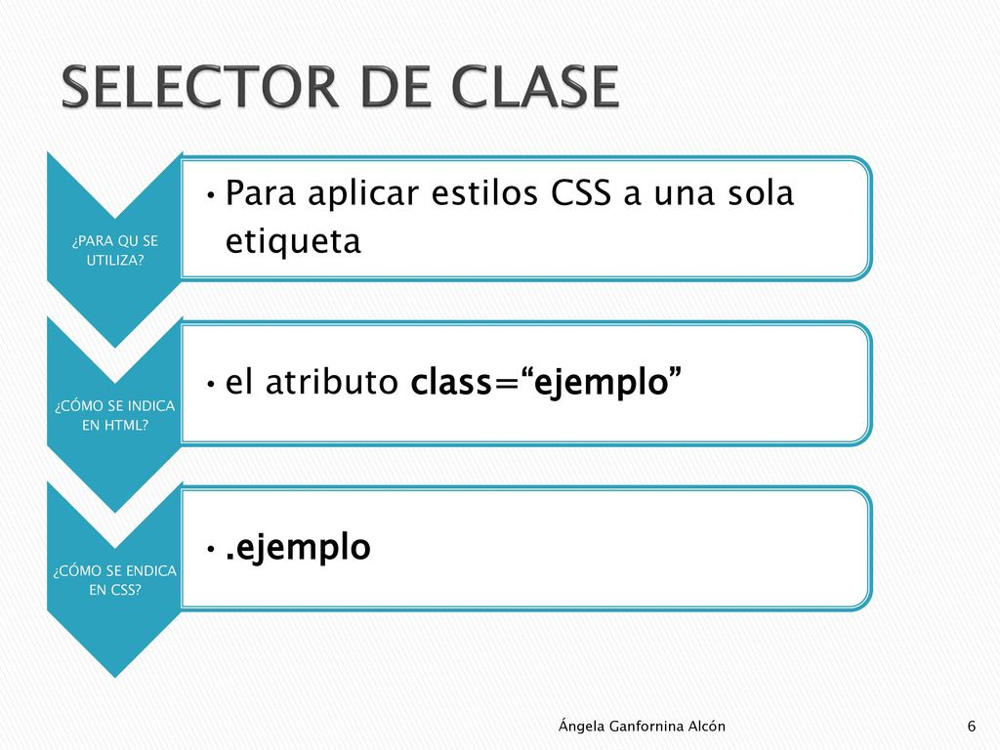
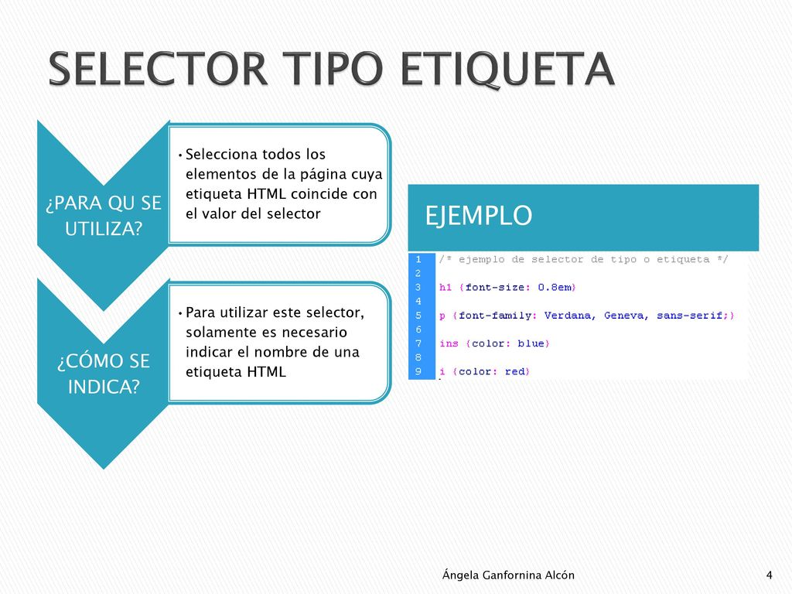
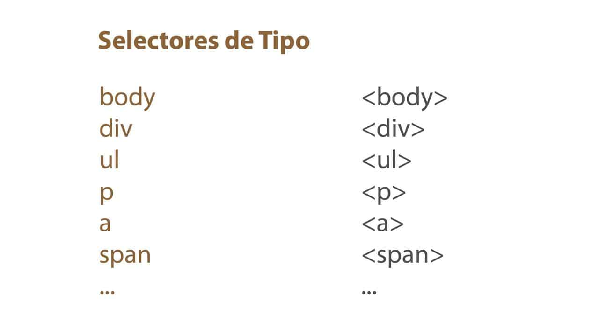
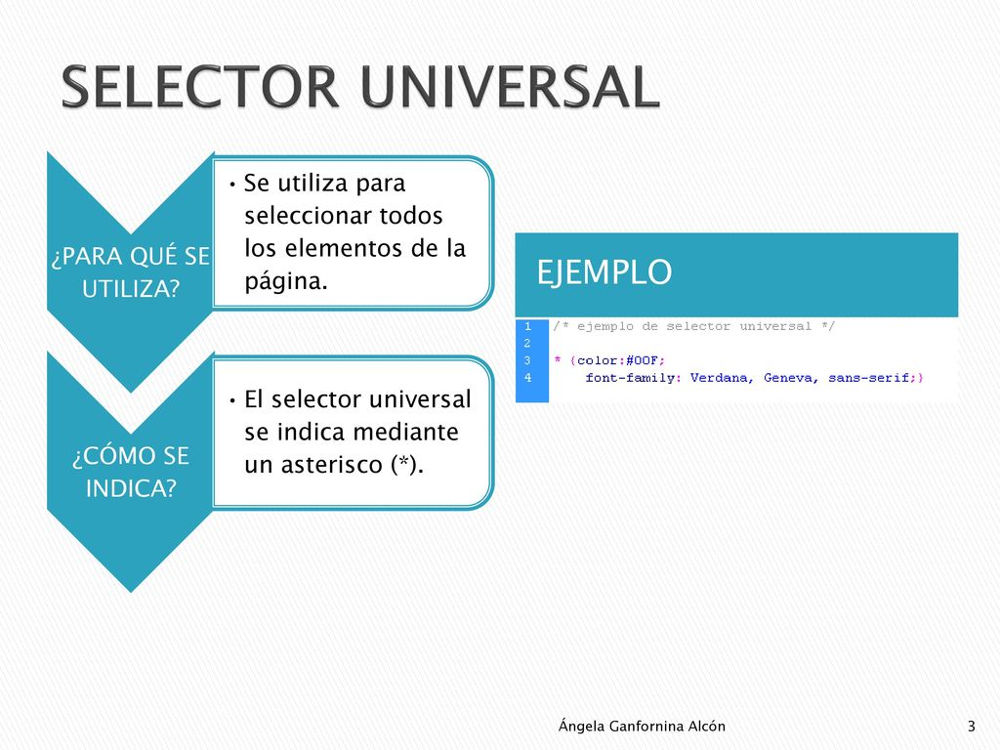
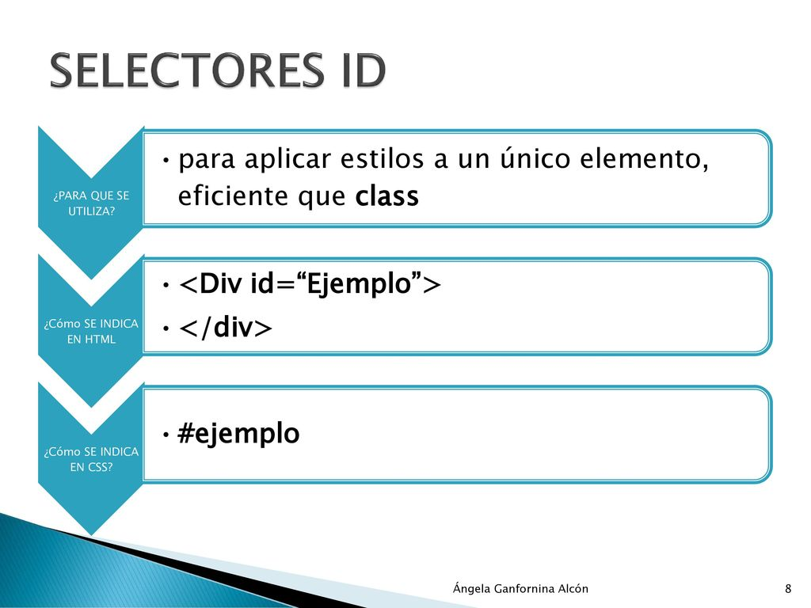

F5
Selectores CSS


Apunta al elemento HTML que deseas diseñar.
Contiene una o más declaraciones separadas por ;
Nombre de la propiedad CSS.
Valor de la propiedad CSS.
Selecciona elementos basados en el nombre, id, clase.
Selecciona elementos basados en una relación específica entre ellos.
Selecciona todo en el documento con esa clase aplicada a él.
Selecciona elementos basados en un atributo o valor de atributo.
Selecciona elementos basados en una etiqueta HTML/elemento.
Selecciona todo el documento.
Con un #en lugar de un carácter de punto, pero se utiliza de la misma manera que un selector de clase. Se puede usar sólo una vez por página, y los elementos sólo pueden tener un solo id valor aplicado a ellos.
Selecciona elementos basados en un determinado estado.
Se puede utilizar para:
Selecciona y da estilo a una parte de un elemento.
Se puede utilizar para:
Se consigue separar el archivo de estilos del fichero HTML. El archivo de estilos cuenta con la extensión .css y se referencia desde HTML mediante el elemento . Este es el método más eficiente y más sencillo de mantener ya que el código CSS se encuentra separado del fichero HTML.
Es utilizando la etiqueta style en la cabecera head del fichero HTML del sitio. La desventaja de este método es que a la hora de realizar cualquier cambio, se debe realizar en múltiples páginas diferentes y el código estará repetido.
Selectores más específicos ganan: Cuantos más elementos específicos se
mencionen en un selector (ID, clases, elementos), mayor será su
especificidad.
Orden de importancia: ID > clases > elementos. Un selector con un ID
siempre prevalecerá sobre uno con una clase, y así sucesivamente.
Se consigue separar el archivo de estilos del fichero HTML. El archivo de estilos cuenta con la extensión .css y se referencia desde HTML mediante el elemento . Este es el método más eficiente y más sencillo de mantener ya que el código CSS se encuentra separado del fichero HTML.
Hojas de estilo importadas: Los estilos definidos en una hoja de
estilo importada con @import tienen menor importancia que los
definidos en la misma hoja de estilo.
Estilos en línea: Los estilos definidos directamente en un elemento
HTML (usando el atributo style) tienen la mayor importancia, pero su
uso no es recomendado por razones de mantenimiento.
Último declarado gana: En caso de igual especificidad, el último estilo declarado prevalecerá.